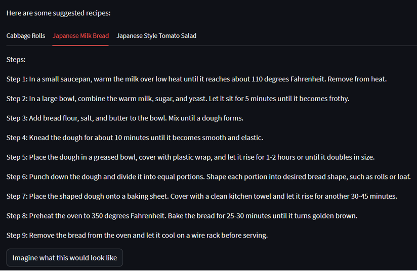
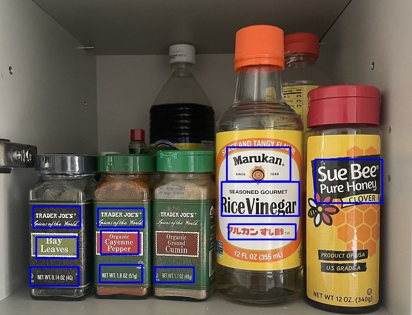

Tenzi Zhuoga
Home
Featured Projects
Contact
Resume
Computer Vision and Machine Learning Projects

What's For Dinner? A Computer Vision based Recipe Generator
Project Overview
Detect Spices and Vegetables

Recipe Generator